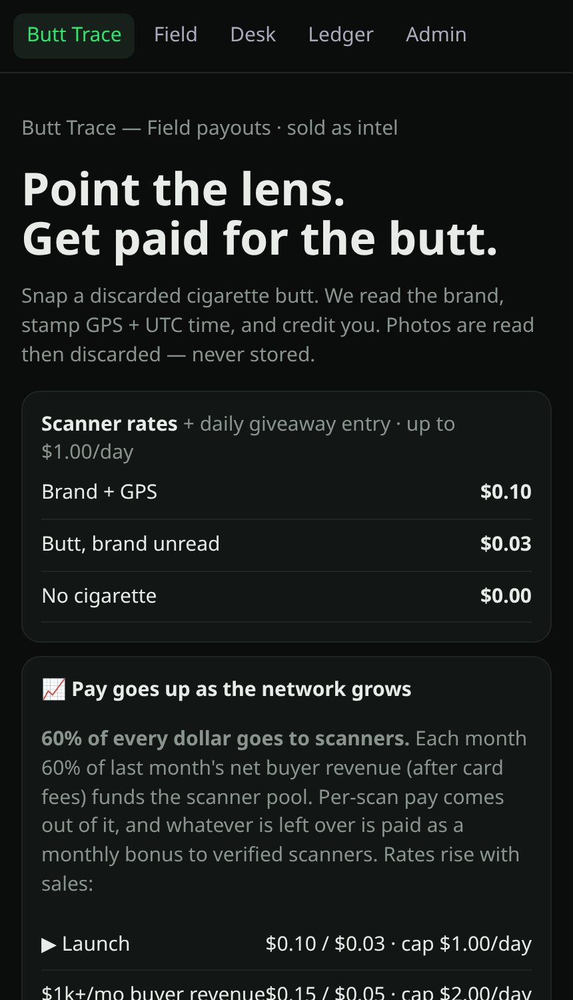
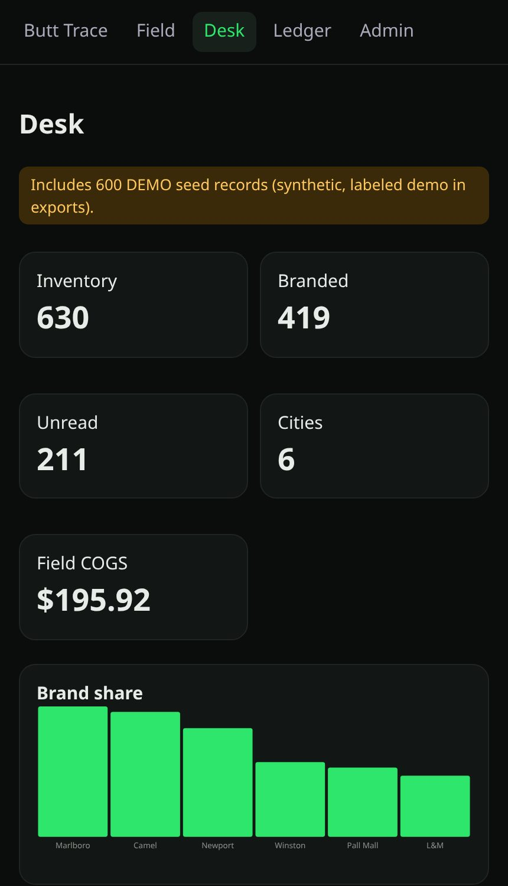

Project overview
Butt Trace — field payouts, sold as intel
Point the camera at a discarded cigarette butt. Grok vision reads the brand, the app stamps GPS and UTC time, credits the scanner, and discards the photo. The aggregated, anonymised litter data (brand share by city) is sold to buyers, and 60% of net buyer revenue funds the scanner pool.
About this page. This app needs its Node.js server (database, AI vision/judge, payments), so it can't run on GitHub Pages. This page explains it with screenshots taken from a local test run using demo data. The full source is in this repository; see README.md.
What it does
- Field scanner: brand + GPS pays more than an unread butt; daily caps
- Pay rates rise as buyer revenue grows; leftover pool paid as a monthly bonus
- Daily Drop giveaway with a free entry (no scan needed) and a prize vote
- Desk for buyers: inventory, brand share, city density, sample report, Stripe checkout
- Ledger with 24-hour hold and cash-out through Stripe Connect
- Ships with 600 clearly labelled DEMO seed records; MOCK classifier when no API key is set
Screenshots


How it's built
Node.js + Express, SQLite (sql.js), vanilla JS PWA in public/, xAI vision, Stripe. Docker / Render config included.
Run it locally
npm install ADMIN_TOKEN=choose-your-own PORT=8787 node server.js # see .env.example for XAI / Stripe settings